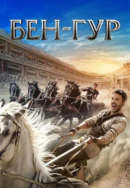
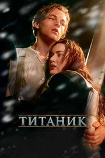
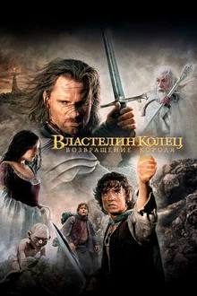
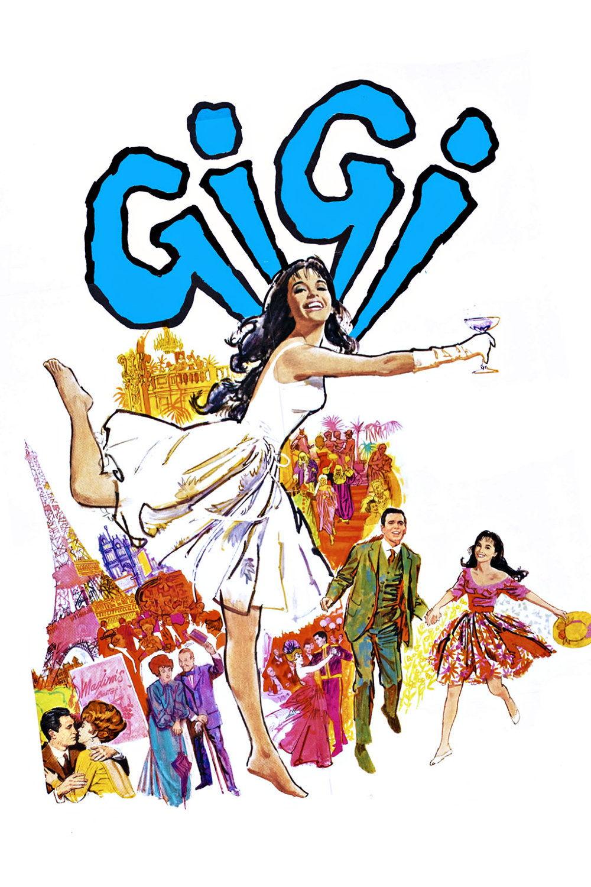
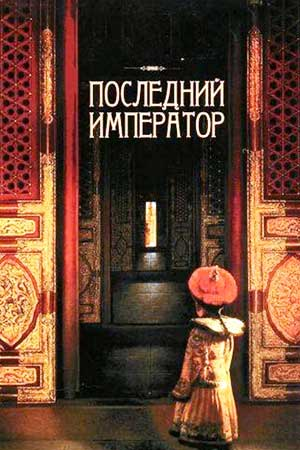
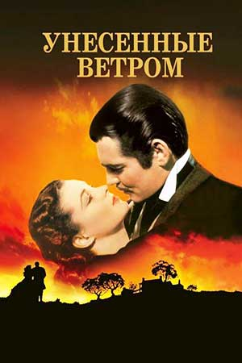

1939 — 2008
Одиннадцать «Оскаров». Три фильма дошли до этой отметки.
«Бен-Гур», «Титаник» и «Возвращение короля» получили по 11 статуэток. Ниже ещё шесть фильмов с рекордами: 10, 9 и 8 наград. Здесь считаем только награды, качество фильмов никто не оценивает.
Смотреть фильмы9фильмов в списке
86«Оскаров» на всех
69лет между самым старым и самым новым
Показать:
Порядок:
-

1959№ 01 11из 12 номинаций Бен-ГурУильям Уайлер -

1997№ 02 11из 14 номинаций ТитаникДжеймс Кэмерон -

2003№ 03 11из 11 номинаций Властелин колец: Возвращение короляПитер Джексон - 1961№ 04 10из 11 номинаций Вестсайдская историяРоберт Уайз, Джером Роббинс
-

1958№ 05 9из 9 номинаций ЖижиВинсенте Миннелли -

1987№ 06 9из 9 номинаций Последний императорБернардо Бертолуччи - 1996№ 07 9из 12 номинаций Английский пациентЭнтони Мингелла
-

1939№ 08 8из 13 номинаций Унесённые ветромВиктор Флеминг - 2008№ 09 8из 10 номинаций Миллионер из трущобДэнни Бойл
Как читать
В списке только конкурсные награды. Две почётные статуэтки «Унесённых ветром» сюда не входят, поэтому у фильма стоит 8.
Что на страницах
У каждого фильма есть краткий рассказ, актёры, оценки на трёх сайтах, трейлер и таблица наград.
Что ещё есть
Сводная таблица, правила подсчёта, викторина и форма, которую проверяют регулярные выражения.